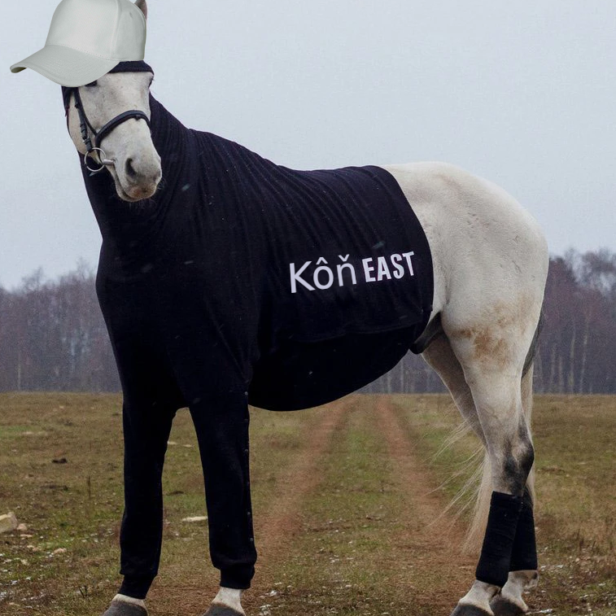

Kôň West
CONCERT ON 31 NOVEMBER 2022!!!
NEW: Kôň West Podcast
Kôň West is going to host a podcast called Kôň West Podcast where we are going to invite FLLS students and talk about different subjects.
The podcast will be available on Spotify, Google Podcasts, Apple Podcasts and as RSS Feed.
Who is Kôň West?
Kôň West is the Slovak cousin of Kanye West. Kanye West always denied the existance of Kôň, but Kôň didn't let that bring him down.
When did Kôň West appear?
Kôň West (pronounced "konye west") appeared first at the Faculty of Foreign Languages and Literatures. He appeared in the Slovak class. "Kôň" means horse in slovak.
Where is the merch?
Beware! This merch is LEGIT. If you order it, you WILL receive it. Due to low demand, the shipping fee is high. I recomend you order in a group. By the way, the products are sold at the price that they are bought. We take $0.00 in profit.
What the fuck?
"Kôň West" is just a joke that was born in the Slovak class at FLLS. "Kôň" meaning horse, pronounced "konye" and sounding a lot like "Kanye", gave birth to "Kôň West", a fictional meme character.